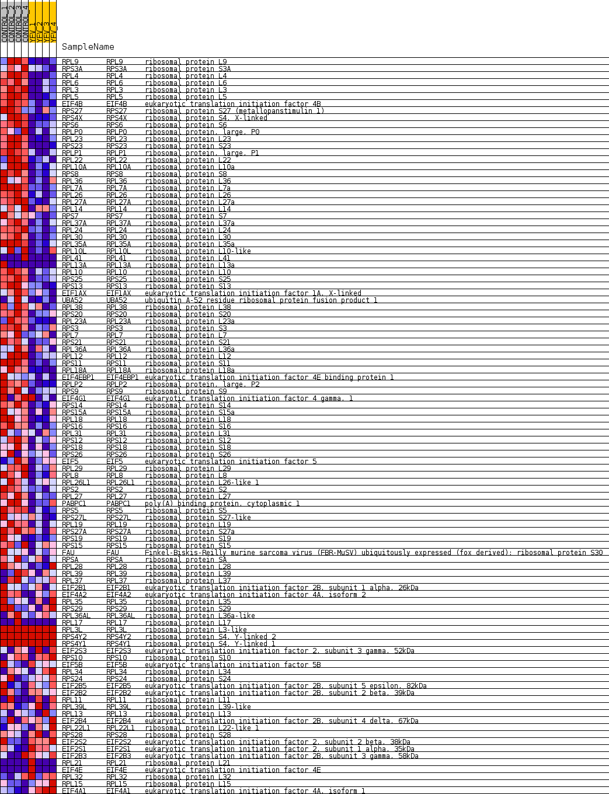
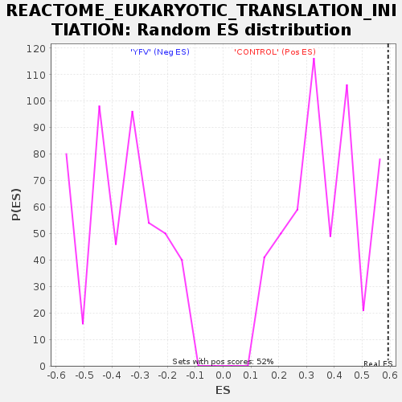

Profile of the Running ES Score & Positions of GeneSet Members on the Rank Ordered List
| Dataset | MATRIZ_GSE99081_collapsed_to_symbols.gsea_CLASE_99081.cls#CONTROL_versus_YFV |
| Phenotype | gsea_CLASE_99081.cls#CONTROL_versus_YFV |
| Upregulated in class | CONTROL |
| GeneSet | REACTOME_EUKARYOTIC_TRANSLATION_INITIATION |
| Enrichment Score (ES) | 0.5934121 |
| Normalized Enrichment Score (NES) | 1.6236439 |
| Nominal p-value | 0.0 |
| FDR q-value | 1.0 |
| FWER p-Value | 0.87 |
| SYMBOL | TITLE | RANK IN GENE LIST | RANK METRIC SCORE | RUNNING ES | CORE ENRICHMENT | |
|---|---|---|---|---|---|---|
| 1 | RPL9 | ribosomal protein L9 | 39 | 1.536 | 0.0330 | Yes |
| 2 | RPS3A | ribosomal protein S3A | 243 | 1.002 | 0.0435 | Yes |
| 3 | RPL4 | ribosomal protein L4 | 245 | 1.000 | 0.0665 | Yes |
| 4 | RPL6 | ribosomal protein L6 | 258 | 0.994 | 0.0887 | Yes |
| 5 | RPL3 | ribosomal protein L3 | 271 | 0.979 | 0.1105 | Yes |
| 6 | RPL5 | ribosomal protein L5 | 331 | 0.928 | 0.1283 | Yes |
| 7 | EIF4B | eukaryotic translation initiation factor 4B | 357 | 0.905 | 0.1476 | Yes |
| 8 | RPS27 | ribosomal protein S27 (metallopanstimulin 1) | 531 | 0.815 | 0.1556 | Yes |
| 9 | RPS4X | ribosomal protein S4, X-linked | 540 | 0.811 | 0.1738 | Yes |
| 10 | RPS6 | ribosomal protein S6 | 556 | 0.801 | 0.1914 | Yes |
| 11 | RPLP0 | ribosomal protein, large, P0 | 638 | 0.765 | 0.2040 | Yes |
| 12 | RPL23 | ribosomal protein L23 | 694 | 0.744 | 0.2177 | Yes |
| 13 | RPS23 | ribosomal protein S23 | 783 | 0.708 | 0.2286 | Yes |
| 14 | RPLP1 | ribosomal protein, large, P1 | 785 | 0.707 | 0.2448 | Yes |
| 15 | RPL22 | ribosomal protein L22 | 823 | 0.695 | 0.2586 | Yes |
| 16 | RPL10A | ribosomal protein L10a | 1031 | 0.636 | 0.2604 | Yes |
| 17 | RPS8 | ribosomal protein S8 | 1045 | 0.631 | 0.2742 | Yes |
| 18 | RPL36 | ribosomal protein L36 | 1103 | 0.618 | 0.2849 | Yes |
| 19 | RPL7A | ribosomal protein L7a | 1114 | 0.617 | 0.2985 | Yes |
| 20 | RPL26 | ribosomal protein L26 | 1288 | 0.575 | 0.3010 | Yes |
| 21 | RPL27A | ribosomal protein L27a | 1398 | 0.551 | 0.3070 | Yes |
| 22 | RPL14 | ribosomal protein L14 | 1446 | 0.539 | 0.3165 | Yes |
| 23 | RPS7 | ribosomal protein S7 | 1477 | 0.534 | 0.3269 | Yes |
| 24 | RPL37A | ribosomal protein L37a | 1562 | 0.517 | 0.3337 | Yes |
| 25 | RPL24 | ribosomal protein L24 | 1574 | 0.514 | 0.3448 | Yes |
| 26 | RPL30 | ribosomal protein L30 | 1608 | 0.507 | 0.3545 | Yes |
| 27 | RPL35A | ribosomal protein L35a | 1658 | 0.502 | 0.3630 | Yes |
| 28 | RPL10L | ribosomal protein L10-like | 1670 | 0.501 | 0.3739 | Yes |
| 29 | RPL41 | ribosomal protein L41 | 1720 | 0.500 | 0.3824 | Yes |
| 30 | RPL13A | ribosomal protein L13a | 1740 | 0.500 | 0.3927 | Yes |
| 31 | RPL10 | ribosomal protein L10 | 1836 | 0.500 | 0.3984 | Yes |
| 32 | RPS25 | ribosomal protein S25 | 1908 | 0.495 | 0.4054 | Yes |
| 33 | RPS13 | ribosomal protein S13 | 1927 | 0.494 | 0.4156 | Yes |
| 34 | EIF1AX | eukaryotic translation initiation factor 1A, X-linked | 1943 | 0.491 | 0.4260 | Yes |
| 35 | UBA52 | ubiquitin A-52 residue ribosomal protein fusion product 1 | 1969 | 0.488 | 0.4357 | Yes |
| 36 | RPL38 | ribosomal protein L38 | 1981 | 0.487 | 0.4463 | Yes |
| 37 | RPS20 | ribosomal protein S20 | 1985 | 0.486 | 0.4573 | Yes |
| 38 | RPL23A | ribosomal protein L23a | 2018 | 0.480 | 0.4664 | Yes |
| 39 | RPS3 | ribosomal protein S3 | 2085 | 0.470 | 0.4732 | Yes |
| 40 | RPL7 | ribosomal protein L7 | 2215 | 0.454 | 0.4756 | Yes |
| 41 | RPS21 | ribosomal protein S21 | 2236 | 0.450 | 0.4848 | Yes |
| 42 | RPL36A | ribosomal protein L36a | 2245 | 0.449 | 0.4946 | Yes |
| 43 | RPL12 | ribosomal protein L12 | 2400 | 0.425 | 0.4949 | Yes |
| 44 | RPS11 | ribosomal protein S11 | 2405 | 0.425 | 0.5044 | Yes |
| 45 | RPL18A | ribosomal protein L18a | 2439 | 0.421 | 0.5121 | Yes |
| 46 | EIF4EBP1 | eukaryotic translation initiation factor 4E binding protein 1 | 2443 | 0.420 | 0.5216 | Yes |
| 47 | RPLP2 | ribosomal protein, large, P2 | 2474 | 0.416 | 0.5293 | Yes |
| 48 | RPS9 | ribosomal protein S9 | 2713 | 0.381 | 0.5234 | Yes |
| 49 | EIF4G1 | eukaryotic translation initiation factor 4 gamma, 1 | 2766 | 0.372 | 0.5287 | Yes |
| 50 | RPS14 | ribosomal protein S14 | 2782 | 0.370 | 0.5363 | Yes |
| 51 | RPS15A | ribosomal protein S15a | 2897 | 0.353 | 0.5374 | Yes |
| 52 | RPL18 | ribosomal protein L18 | 2912 | 0.352 | 0.5446 | Yes |
| 53 | RPS16 | ribosomal protein S16 | 2921 | 0.351 | 0.5522 | Yes |
| 54 | RPL31 | ribosomal protein L31 | 2998 | 0.343 | 0.5554 | Yes |
| 55 | RPS12 | ribosomal protein S12 | 3083 | 0.334 | 0.5579 | Yes |
| 56 | RPS18 | ribosomal protein S18 | 3094 | 0.332 | 0.5650 | Yes |
| 57 | RPS26 | ribosomal protein S26 | 3104 | 0.332 | 0.5720 | Yes |
| 58 | EIF5 | eukaryotic translation initiation factor 5 | 3177 | 0.322 | 0.5750 | Yes |
| 59 | RPL29 | ribosomal protein L29 | 3224 | 0.317 | 0.5795 | Yes |
| 60 | RPL8 | ribosomal protein L8 | 3265 | 0.313 | 0.5842 | Yes |
| 61 | RPL26L1 | ribosomal protein L26-like 1 | 3380 | 0.301 | 0.5841 | Yes |
| 62 | RPS2 | ribosomal protein S2 | 3429 | 0.296 | 0.5879 | Yes |
| 63 | RPL27 | ribosomal protein L27 | 3451 | 0.294 | 0.5934 | Yes |
| 64 | PABPC1 | poly(A) binding protein, cytoplasmic 1 | 3710 | 0.265 | 0.5835 | No |
| 65 | RPS5 | ribosomal protein S5 | 3819 | 0.257 | 0.5828 | No |
| 66 | RPS27L | ribosomal protein S27-like | 3849 | 0.254 | 0.5868 | No |
| 67 | RPL19 | ribosomal protein L19 | 3896 | 0.251 | 0.5898 | No |
| 68 | RPS27A | ribosomal protein S27a | 4134 | 0.232 | 0.5804 | No |
| 69 | RPS19 | ribosomal protein S19 | 4912 | 0.165 | 0.5361 | No |
| 70 | RPS15 | ribosomal protein S15 | 4986 | 0.160 | 0.5352 | No |
| 71 | FAU | Finkel-Biskis-Reilly murine sarcoma virus (FBR-MuSV) ubiquitously expressed (fox derived); ribosomal protein S30 | 5050 | 0.154 | 0.5349 | No |
| 72 | RPSA | ribosomal protein SA | 5235 | 0.135 | 0.5266 | No |
| 73 | RPL28 | ribosomal protein L28 | 5254 | 0.133 | 0.5285 | No |
| 74 | RPL39 | ribosomal protein L39 | 5334 | 0.127 | 0.5266 | No |
| 75 | RPL37 | ribosomal protein L37 | 5525 | 0.111 | 0.5174 | No |
| 76 | EIF2B1 | eukaryotic translation initiation factor 2B, subunit 1 alpha, 26kDa | 5841 | 0.089 | 0.4999 | No |
| 77 | EIF4A2 | eukaryotic translation initiation factor 4A, isoform 2 | 5974 | 0.078 | 0.4935 | No |
| 78 | RPL35 | ribosomal protein L35 | 6021 | 0.074 | 0.4923 | No |
| 79 | RPS29 | ribosomal protein S29 | 6686 | 0.027 | 0.4518 | No |
| 80 | RPL36AL | ribosomal protein L36a-like | 6788 | 0.022 | 0.4460 | No |
| 81 | RPL17 | ribosomal protein L17 | 7410 | 0.000 | 0.4076 | No |
| 82 | RPL3L | ribosomal protein L3-like | 7592 | 0.000 | 0.3963 | No |
| 83 | RPS4Y2 | ribosomal protein S4, Y-linked 2 | 8583 | 0.000 | 0.3350 | No |
| 84 | RPS4Y1 | ribosomal protein S4, Y-linked 1 | 8584 | 0.000 | 0.3350 | No |
| 85 | EIF2S3 | eukaryotic translation initiation factor 2, subunit 3 gamma, 52kDa | 10115 | -0.031 | 0.2409 | No |
| 86 | RPS10 | ribosomal protein S10 | 10390 | -0.051 | 0.2251 | No |
| 87 | EIF5B | eukaryotic translation initiation factor 5B | 11115 | -0.111 | 0.1828 | No |
| 88 | RPL34 | ribosomal protein L34 | 11119 | -0.112 | 0.1851 | No |
| 89 | RPS24 | ribosomal protein S24 | 11178 | -0.118 | 0.1843 | No |
| 90 | EIF2B5 | eukaryotic translation initiation factor 2B, subunit 5 epsilon, 82kDa | 11358 | -0.135 | 0.1763 | No |
| 91 | EIF2B2 | eukaryotic translation initiation factor 2B, subunit 2 beta, 39kDa | 11595 | -0.155 | 0.1652 | No |
| 92 | RPL11 | ribosomal protein L11 | 11759 | -0.170 | 0.1590 | No |
| 93 | RPL39L | ribosomal protein L39-like | 11855 | -0.179 | 0.1573 | No |
| 94 | RPL13 | ribosomal protein L13 | 12065 | -0.199 | 0.1489 | No |
| 95 | EIF2B4 | eukaryotic translation initiation factor 2B, subunit 4 delta, 67kDa | 12087 | -0.201 | 0.1523 | No |
| 96 | RPL22L1 | ribosomal protein L22-like 1 | 12387 | -0.232 | 0.1391 | No |
| 97 | RPS28 | ribosomal protein S28 | 13382 | -0.348 | 0.0855 | No |
| 98 | EIF2S2 | eukaryotic translation initiation factor 2, subunit 2 beta, 38kDa | 13597 | -0.379 | 0.0810 | No |
| 99 | EIF2S1 | eukaryotic translation initiation factor 2, subunit 1 alpha, 35kDa | 13618 | -0.383 | 0.0886 | No |
| 100 | EIF2B3 | eukaryotic translation initiation factor 2B, subunit 3 gamma, 58kDa | 13902 | -0.425 | 0.0808 | No |
| 101 | RPL21 | ribosomal protein L21 | 14215 | -0.485 | 0.0727 | No |
| 102 | EIF4E | eukaryotic translation initiation factor 4E | 14505 | -0.500 | 0.0663 | No |
| 103 | RPL32 | ribosomal protein L32 | 14623 | -0.523 | 0.0711 | No |
| 104 | RPL15 | ribosomal protein L15 | 14863 | -0.582 | 0.0697 | No |
| 105 | EIF4A1 | eukaryotic translation initiation factor 4A, isoform 1 | 15149 | -0.672 | 0.0676 | No |

